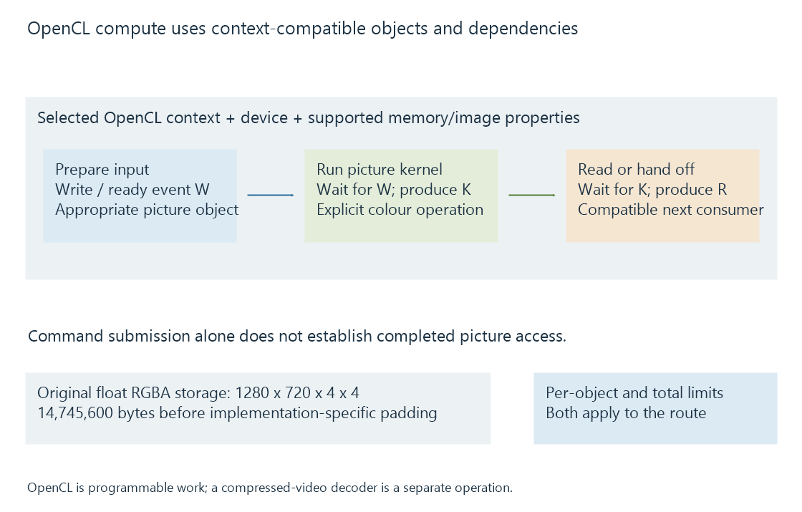

OpenCL for media processing
OpenCL runs programmable work on supported compute devices through contexts, memory objects and command queues, with explicit capability and completion relationships for picture processing.
OpenCL is a programmable compute interface. A media application can use it to transform suitable picture data, with operations such as scaling, composition or colour processing expressed as kernels.
A dedicated video decoder or encoder is another operation. An OpenCL filter can sit between those stages without making OpenCL itself a compressed-video codec API.
Select a device and usable resources
The application selects a platform/device and creates the relevant context. Its kernels and memory objects need the capabilities exposed by that implementation.
Image support, accepted image formats, memory limits and interoperability extensions are specific queries. The common API does not mean every supported device exposes every optional feature.

The current unified specification covers current and earlier versions. A version string should be interpreted together with the feature queries required by the application's particular processing route.
Command dependencies make the picture ready
Commands can be queued without the host waiting for all device work to finish. Events let the application express the dependencies needed by later commands.
An original data-flow trace is:
Prepare input -> event W
Run picture kernel, waiting for W -> event K
Read or hand off the result, waiting for K -> event R
The labels are conceptual events, not live OpenCL handles. They express that a kernel must not read unfinished input and that a consumer must not use an unfinished result.
An in-order queue has its specified ordering behavior; an out-of-order arrangement needs the applicable dependencies. Merely creating several queues does not synchronize their shared memory automatically.
Completing the host's enqueue call therefore establishes submission, while the relevant completion event establishes device progress.
A picture representation has an allocation cost
For an original 1280 × 720 output represented as four 32-bit floating-point channels:
1280 × 720 × 4 channels × 4 bytes = 14,745,600 bytes
This is a selected intermediate representation, not the encoded-video bitrate or a requirement that all OpenCL filters use float RGBA.
The device's maximum allocation size constrains a particular memory object. Total global memory constrains a larger set of live allocations. Passing one limit does not establish that every pool and intermediate needed by the pipeline fits simultaneously.
Interoperability connects another memory contract
An application can import or share suitable resources when the device and relevant extension path support it. The consumer still needs the actual layout and completion/ownership rules.
A hardware-decoded surface does not become a usable OpenCL image simply because both are associated with a GPU. Another processing route might require transfer, format preparation or a different implementation.
See Also
- GPU compute and video processing
- Vulkan for media processing
- Mixed hardware and software filtering
- Zero-copy video pipelines and the boundary being avoided
- GPU memory limits in video processing